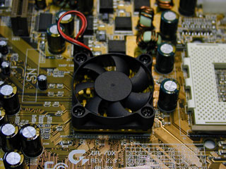
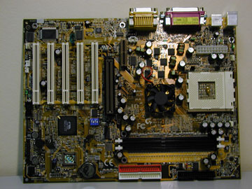
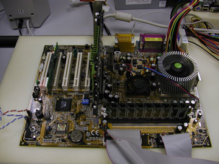
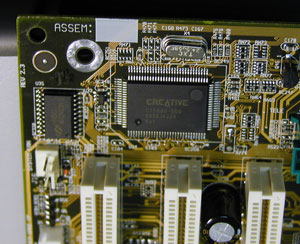

Илья Гавриченков
http://www.fcenter.ru
До начала массовых продаж DDR-систем остается все меньше времени. В начале 2001 года, после ряда задержек, связанных как с инженерными, так и с производственными проблемами, на рынке наконец должны были появиться системные платы, основанные на чипсетах AMD-760 и ALi Magic 1 (под процессоры AMD) и VIA Apollo Pro266 (под процессоры Intel). Примерно в эти же сроки AMD планировала начать поставки своих процессоров Athlon с частотой системной шины 266 МГц. Поэтому нарастающий интерес к системам с DDR SDRAM вполне понятен. В первую очередь он касается новых DDR-платформ от AMD, поскольку именно в них применение DDR SDRAM должно дать максимальный прирост производительности.
Преимущества, которые может дать использование DDR SDRAM вместе с процессорами Athlon, мы уже обсуждали в статье, посвященной системной плате Iwill KA266-R ("BYTE/Россия" №2'2001). По результатам тестов, приведенных в этой статье, мы видели, что использование DDR SDRAM дает прирост производительности порядка 10%. Правда, все тесты выполнялись на системной плате, основанной на чипсете ALi MAGiK 1. AMD же для продвижения DDR SDRAM и своих новых процессоров с шиной 266 МГц выпустила и собственный чипсет, поддерживающий все эти нововведения - AMD-760. Несмотря на то, что по иронии судьбы системные платы на его основе появятся чуть позже продуктов на базе ALi MAGiK 1, ожидается, что именно этот набор микросхем обеспечит лучшую стабильность и производительность, поскольку он разрабатывался непосредственно создателем процессоров. Поэтому тестирование Athlon-систем с DDR SDRAM на базе AMD-760 представляет особый интерес.
Системные платы на основе AMD-760 анонсировали уже около десятка различных производителей. Однако вероятно, что первым продуктом на основе этого чипсета, который появится в продаже, окажется системная плата GA-7DX одного из ведущих тайваньских разработчиков, компании Gigabyte. Строго говоря, в Японии уже можно купить модификацию этой платы GA-7DXC, поддерживающую только процессоры с шиной 200 МГц и памятью PC1600 DDR SDRAM, но "полноценные" версии GA-7DX пока не продаются. Нам же удалось получить на тестирование плату Gigabyte GA-7DX, поддерживающую и PC2100 DDR SDRAM, и шину процессора с частотой 266 МГц.
Чипсет
AMD не является производителем чипсетов в классическом понимании этого слова, поскольку эта часть рынка не служит для компании одним из основных источников прибыли. Однако продавать процессоры, под которые нет чипсетов, невозможно. Поэтому компания все-таки разрабатывает и выпускает в ограниченном количестве наборы логики для продвижения своих новых процессоров. Это позволяет AMD не испытывать больших неудобств, когда другие поставщики наборов логики задерживают свои продукты. Так, при выпуске первых процессоров Athlon AMD предлагала производителям плат набор логики AMD 750, чье место впоследствии занял на рынке VIA KX133. Теперь же снова пришло время AMD сказать слово на рынке чипсетов.
Конкуренция с Intel, которая выпустила новый процессор Pentium 4, вынудила AMD тоже искать пути повышения производительности своих процессоров. Пути эти были найдены, и AMD планировала, начиная с января 2001 года, поставлять процессоры Athlon с частотой шины, увеличенной с 200 до 266 МГц. Увеличение на 33% пропускной способности процессорной шины потребовало и более быстрой шины памяти, так как пропускная способность применявшейся до этого PC133 SDRAM оказалась вдвое меньше пропускной способности процессорной шины. Таким образом, системная память грозила стать узким местом, ограничивающим производительность, поэтому AMD приняла решение продвигать для своих старших процессоров DDR SDRAM, которая могла бы устранить эту проблему.
Чтобы облегчить переход на использование процессорной шины 266 МГц и DDR SDRAM, AMD анонсировала свой новый чипсет, AMD-760. Надо сказать, что, как оказалось, компания не ошиблась: другие производители чипсетов, обещавшие также реализовать поддержку DDR SDRAM и новой шины в своих очередных продуктах к началу 2001 года, так и не сумели обеспечить массовые поставки чипов производителям плат.
Чипсет AMD-760 имеет традиционную архитектуру и состоит из двух чипов: северного моста AMD-761 и южного AMD-766. Мосты соединяются между собой шиной PCI; AMD, в отличие, например, от той же VIA, применяющей в своих DDR-чипсетах шину V-Link, не стала разрабатывать никаких специализированных шин для этой цели.
|  | Чипсет AMD-760, оснащенный кулером.
|
Характеристики AMD-760 и его основных конкурентов, поддерживающих процессоры для разъема Socket A, приведены в таблице.
| Характеристики чипсета AMD-760 и его основных конкурентов | |||||
|---|---|---|---|---|---|
| AMD-760 (AMD-761+AMD-766) | AMD-760 (AMD-761+VIA 686B) | ALi MAGiK 1 (M1651+ M1535D+) | VIA KT133A (VT8363A+ VIA 686B) | VIA KT133 (VT8363+ VIA 686A) | |
| Частоты процессорной шины, МГц | 200, 266 | 200, 266 | 200, 266 | 200, 266 | 200 |
| Память | PC2100/1600 DDR SDRAM | PC2100/1600 DDR SDRAM | PC2100/1600 DDR SDRAM; PC100/133 SDRAM | PC100/133 SDRAM | PC100/133 SDRAM |
| Максимальный объем памяти, Гбайт | 4 (2 в случае unregistered DIMM) | 4 (2 в случае unregistered DIMM) | 3 | 1,5 | 1,5 |
| Поддержка ECC | + | + | - | - | - |
| Асинхронная шина памяти | - | - | + | + | + |
| AGP 4x | + | + | + | + | + |
| ATA-66/100 | +/+ | +/+ | +/+ | +/+ | +/- |
| AC'97 | - | + | + | + | + |
| USB-порты | 4 | 4 | 6 | 4 | 4 |
Плата
Ознакомившись с характеристиками чипсета, примененного в Gigabyte GA-7DX, перейдем к рассмотрению самой системной платы, которую мы тестировали. Первым делом посмотрим на спецификацию.
| Спецификация Gigabyte GA-7DX | |
|---|---|
| Процессоры | AMD Athlon/Duron |
| Чипсет | AMD-760 (AMD-761 + VIA 686B) |
| Частоты FSB, МГц | 95, 100, 103, 105, 110, 115, 133 |
| Функции для разгона | Нет |
| Память | Два 184-контактных DIMM-слота для DDR SDRAM |
| Слоты расширения (AGP/PCI/ISA/AMR) | 1/5/0/1 |
| Интегрированное видео | Нет |
| Интегрированный звук | Creative CT5880 |
| Дополнительные возможности | Нет |
| BIOS | Award Modular BIOS 6.00PG |
| Форм-фактор | ATX, 312x232 мм |
Как и в случае с чипсетом AMD-750, Gigabyte при разработке нового чипсета тесно сотрудничала с AMD, поэтому совершенно неудивительно, что Gigabyte GA-7DX стала первой платой на чипсете AMD-760, которая поставлялась ОЕМ-партнерам, а затем появилась и в продаже. Это событие произошло бы и до начала этого года, однако выявленные проблемы в функционировании чипсета AMD-760 с PC2100 DDR SDRAM привели к задержке в появлении платы на рынке.
Gigabyte GA-7DX - вторая (после Iwill KA266-R) плата с поддержкой DDR SDRAM, выпущенная на рынок, - имеет два 184-контактных DIMM-слота для этой памяти. Gigabyte решила не связываться с поддержкой регистровой DIMM, поэтому возможность устанавливать в плату более двух модулей памяти отсутствует физически. Тем не менее, двух слотов для установки памяти, скорее всего, окажется достаточно, учитывая, что в недалеком будущем станут доступны гигабайтные модули PC2100 DDR SDRAM.
|  | Общий вид платы Gigabyte GA-7DX.
|
К сожалению, чипсет AMD-760 не имеет возможности тактировать шину памяти и процессора асинхронно. Это приводит к тому, что максимальная производительность на Gigabyte GA-7DX достигается только при использовании процессоров Athlon с частотой шины 266 МГц. В случае же обычных процессоров Athlon и Duron с шиной 200 МГц память тактируется только на 200 МГц, и производительность такой системы оказывается не намного выше, чем системы с PC133 SDRAM.
Процессорный разъем Socket A на Gigabyte GA-7DX расположен практически вплотную к северному мосту, причем между ними втиснуто еще два конденсатора. Именно эти элементы могут препятствовать установке на плату массивных кулеров; в частности, не удастся установить популярные Chrome Orb или Super Orb.
На Gigabyte GA-7DX имеется универсальный слот AGP, допускающий использование как 1,5-вольтовых, так и 3,3-вольтовых AGP 2x и 4x графических карт, и снабженный ретеншн-механизмом, фиксирующим установленные AGP-платы в правильном положении. Хотя слот AGP и расположен достаточно близко к разъемам для DIMM, установленная в слот AGP видеокарта не блокирует защелки DIMM. Помимо этого, на плате имеется пять слотов PCI и слот AMR, предназначенный для установки дешевых программных модемов или аудиокарт, что может быть актуально для сборщиков компьютеров.
Полноразмерные PCI платы могут быть установлены во все имеющиеся слоты. Слотов ISA на GA-7DX нет; видимо Gigabyte считает их анахронизмом.
Размеры GA-7DX стандартны для современной платы формата ATX, поэтому никаких проблем с установкой этой материнской платы в большинство корпусов не возникнет. Однако разъем для подключения блока питания расположен не самым удачным образом - между Socket A и разъемами портов на заднем краю платы. В результате силовой кабель при размещении платы в корпусе будет проходить над процессором, затрудняя циркуляцию воздуха и качественное охлаждение.
|  | Общий вид платы с установленными процессором и памятью.
|
Зато разъемы для подключения IDE-устройств и FDD находятся там, где им и предписывается находиться спецификацией ATX, - перед слотами DIMM. В результате кабели IDE и FDD будут располагаться в корпусе достаточно удобно. Что же касается разъема для подключения дополнительной пары USB-портов, то он находится на левом краю платы, что в случае его использования вынудит устанавливать планку с самими разъемами (кстати, в комплект поставки не входящую) в самое крайнее место в задней стенке корпуса.
По сложившейся традиции, Gigabyte оборудовала плату GA-7DX аппаратным звуковым контроллером Creative CT5880, сидящим на шине PCI. Интересная особенность реализации звука - использование четырехканального кодека Sigmatel STAC9708T. С практической точки зрения это означает, что интегрированная на GA-7DX звуковая карта является четырехканальной и в Line-In вход можно включить и вторую пару колонок.
|  | Звуковой контроллер Creative CT5880 на плате.
|
В качестве южного моста на Gigabyte GA-7DX используется микросхема VIA 686B, благодаря которой плата поддерживает протокол ATA-100. По негласному правилу, первый IDE-разъем на плате - красного цвета, что еще раз подчеркивает поддержку протокола ATA-100.
Этот же южный мост отвечает на GA-7DX и за аппаратный мониторинг. Плата поддерживает два температурных сенсора. Данные о температуре процессора снимаются с датчика, установленного в центре Socket A, а следовательно, не совсем соответствуют от реальной температуры процессора. Количество измеряемых напряжений - четыре. На плате имеется три коннектора для подключения кулеров, обороты двух из которых могут контролироваться.
Что касается BIOS, то на GA-7DX используется Award Modular 6.00PG, имеющий достаточно стандартный набор настроек. Правда, для упрощения работы с BIOS Setup Gigabyte сильно уменьшила число доступных настроек, что может слегка огорчить продвинутых пользователей. Тем не менее все основные настройки, включая конфигурирование таймингов памяти, в BIOS Setup присутствуют.
Северный мост на Gigabyte GA-7DX снабжен активным охлаждением. На стандартном радиаторе установлен вентилятор, напоминающий те, что обычно устанавливаются на графических картах. Трудно сказать, насколько его наличие отражается на стабильности платы, однако Gigabyte - не единственный производитель, использующий подобный прием. Активное охлаждение будет использоваться и на системных платах на базе AMD-760 от ASUS и Abit.
Кроме того, GA-7DX оборудована пьезопищалкой, заменяющей PC Speaker, и миниатюрным желтым светодиодом, сигнализирующим о подаче питания на слоты DIMM.
Что касается возможностей для разгона процессора, то у рассматриваемой системной платы они крайне бедны. Помимо возможности переключать при помощи блока из четырех dip-переключателей частоту FSB между несколькими значениями (95, 100, 103, 105, 110, 115, 133 МГц), никаких других полезных для разгона процессора функций у GA-7DX нет. Возможности изменять вручную коэффициент умножения процессора, напряжения питания процессора или схем ввода-вывода у этой платы отсутствуют.
Необходимо отметить, что на протяжении тестирования у нас не было с нашей Gigabyte GA-7DX никаких проблем, что достаточно удивительно, учитывая, что в руках у нас был еще не серийный, а предварительный образец. Несмотря на то, что изначально AMD-760 имел проблемы с устойчивостью при работе с PC2100 DDR SDRAM, плата Gigabyte GA-7DX продемонстрировала исключительно стабильную работу как при ее использовании с PC1600 DDR SDRAM, так и с PC2100 DDR SDRAM.
Тестирование
Как мы тестировали
Gigabyte GA-7DX - уже вторая плата с поддержкой DDR SDRAM, побывавшая в нашей лаборатории. Тем не менее продукты на базе AMD-760 мы еще не тестировали, поэтому изучению быстродействия этой платы было уделено особое внимание. Скорость Gigabyte GA-7DX с PC2100 DDR SDRAM и PC1600 DDR SDRAM мы сравнивали с быстродействием системы, собранной на основе платы с чипсетом VIA KT133 и работающей с PC133 SDRAM.
Таким образом, для тестирования было собрано три системы с приведенными ниже конфигурациями. На тестовых системах была установлена ОС Microsoft Windows 98 Second Edition.
| Тестируемые системы | |||
|---|---|---|---|
| AMD-760, PC2100 DDR SDRAM | AMD-760, PC1600 DDR SDRAM | VIA KT133, PC133 SDRAM | |
| Процессор | AMD Athlon 1 ГГц (266 МГц FSB) | AMD Athlon 1 ГГц (200 МГц FSB) | |
| Системная плата | Gigabyte GA-7DX | ABIT KT7 | |
| Память | PC2100 DDR SDRAM, 256 Мбайт | PC1600 DDR SDRAM, 256 Мбайт | PC133 SDRAM, 256 Мбайт |
| Видеокарта | Creative 3D Blaster Annihilator 2 Ultra (NVIDIA GeForce2 Ultra) | ||
| Жесткий диск | IBM DTLA 307015 | ||
Результаты
Прежде чем перейти к изучению производительности системной платы Gigabyte GA-7DX на чипсете AMD-760, оценим, насколько быстро работает шина памяти у этого набора логики, поддерживающего PC2100 и PC1600 DDR SDRAM. Для этого традиционно воспользуемся синтетическим тестом SiSoft Sandra 2001.
SiSoft Sandra 2001. Результатами этого теста (рис. 1) нас уже не удивишь. По своему опыту мы знаем, что производительность подсистемы памяти, судя по результатам этого бенчмарка, при использовании DDR SDRAM возрастает на величину до 60%. В данном же случае при использовании операций ALU для пересылок данных выигрыш от применения DDR SDRAM составляет 39% в случае PC1600 DDR SDRAM и 46% в случае PC2100 DDR SDRAM. Если же операции с памятью выполняются посредством блока FPU, то эти показатели еще выше, и выигрыш от использования PC1600 DDR SDRAM составляет 48%, а от использования PC2100 DDR SDRAM - 59%. Необходимо также отметить, что переход с PC1600 на PC2100 в данном тесте дает не очень большой выигрыш в быстродействии, даже несмотря на увеличение частоты системной шины с 200 до 266 Мгц. Прежде всего это говорит о том, что показатели данного теста в первую очередь зависят от пропускной способности шины системной памяти, а процессорная шина с частотой 200 МГц не является узким местом при использовании PC1600 DDR SDRAM.
Business Winstone 2001. Данный тест, моделирующий работу в типовых офисных приложениях, показывает, что использование высокопроизводительной DDR SDRAM в бизнес-приложениях совершенно неоправданно. Максимальный прирост производительности, полученный на Gigabyte GA-7DX при использовании PC2100 DDR SDRAM, по сравнению с результатами системы с PC133 SDRAM оказался равным всего 3% (рис. 2).
Content Creation Winstone 2001. Принцип работы этого теста такой же, как и у предыдущего, с той лишь разницей, что Content Creation Winstone 2001 моделирует работу в приложениях для создания контента (яркие примеры таких приложений - Adobe Photoshop или Macromedia Dreamweaver). Поскольку все эти приложения достаточно часто оперируют с данными больших объемов, AMD-760 с PC2100 DDR SDRAM позволяет получить 11-процентный выигрыш по сравнению с KT133. Результаты системы с PC1600 DDR SDRAM хуже не намного - прирост производительности по сравнению с системой на KT133 равен 9% (рис. 3).
SYSmark 2000. Этот тест измеряет средневзвешенную производительность в 12 типовых приложениях, хронометрируя время выполнения каждого из них по отдельности. Поэтому разница в производительности систем с памятью различной пропускной способности оказывается меньше, чем в тестах Winstone, где приложения запускаются одновременно. Тем не менее, даже несмотря на это, плата Gigabyte GA-7DX с памятью PC2100 DDR SDRAM оказывается быстрее платы с PC133 SDRAM на 8%. Показатели же PC1600 DDR SDRAM очень близки к результатам PC2100 (различаются всего на один пункт). Взглянем на результаты SYSmark 2000 подробнее (рис. 4). Тест SYSmark 2000 Office Productivity показывает, что использование DDR SDRAM дает 7-8% выигрыша в производительности. Результаты SYSmark 2000 Internet Content Creation близки к данным предыдущего теста. Любопытно, но здесь Gigabyte GA-7DX продемонстрировала одинаковую производительность при использовании обоих типов DDR SDRAM - PC1600 и PC2100, несмотря даже на то, что пропускная способность шин памяти и процессора различна. Возможно, в какой-то мере это объясняется тем, что обычно PC1600 имеет CAS 2, а PC2100 CAS 2,5, в то время как методика измерения производительности, принятая в SYSmark2000, сильно зависит от латентности памяти.
3D Studio MAX R3. Не обошли стороной на этот раз мы и профессиональный 3D-пакет 3D Studio MAX R3. Для оценки производительностей в нем мы измерили время рендеринга сцены Anisotropic Wheel, входящей в дистрибутив, при разрешении 800x600. Соответственно меньшее время говорит о лучшем результате. Как можно видеть из рис. 5, использование DDR SDRAM и платы с чипсетом AMD-760 позволяет ускорить эту операцию всего на одну секунду. Что ж, это и не удивительно. Основная нагрузка при рендеринге в 3D Studio MAX ложится на блок операций с плавающей точкой процессора, а не на шину памяти.
WinZip. Компрессия информации на плате с чипсетом AMD-760 и PC2100 DDR SDRAM выполняется на 23% быстрее, чем на подобной системе с PC133 SDRAM (рис. 6). Достаточно хороший показатель DDR SDRAM в этом тесте объясняется тем, что архивация по алгоритму LZW, применяемому в WinZIP, - пример процесса, оперирующего с большими массивами данных. Что же касается результата PC1600 DDR SDRAM, то эта память ускорила работу WinZIP на 18% по сравнению с системой на VIA KT133.
MP3 Encoding. Мы измерили скорость кодирования mp3-файлов в популярном приложении AudioCatalist. Для этого использовался специально созданный wav-файл объемом 100 Мбайт. Как можно видеть из рис. 7, ускорение, получаемое от перехода на DDR-платформу с чипсетом AMD-760, не так велико: не более 7%.
Посмотрим теперь, как ведут себя тестируемые системы в игровых приложениях, но первым делом посмотрим на результаты синтетического 3DMark2000.
3DMark2000. В относительно небольшом разрешении (800x600x16), когда ни шина AGP, ни скорость заполнения видеокарты не являются узким местом в системе, скорость, показываемая системой с чипсетом AMD-760, ощутимо выше, чем быстродействие системы на базе набора логики KT133: AMD-760 с PC2100 DDR SDRAM показывает результат на 14% лучше, а с PC1600 DDR SDRAM - на 11% лучше (рис. 8).
При увеличении разрешения (1024x768x32) производительность графической подсистемы начинает играть большую роль, поэтому использование различных типов системной памяти сказывается на общей производительности уже не так сильно. Тем не менее результат, продемонстрированный платой Gigabyte GA-7DX, на 5-6% лучше результата системы с чипсетом VIA KT133 и PC133 SDRAM.
Quake3 Arena. Производительность в Quake3 зависит от пропускной способности памяти достаточно сильно. Поэтому использование DDR SDRAM дало ощутимый прирост в числе fps. Как можно увидеть из рис. 9, в Quake3 Arena (demo001, Fastest, 640x480x16) система на AMD-760 с PC2100 DDR SDRAM работает на 19% быстрее, чем аналогичная система с PC133 SDRAM и чипсетом VIA KT133. Достаточно ощутимый выигрыш даст и PC1600 DDR SDRAM: разница в производительности системы с такой памятью и с PC133 SDRAM составляет 14%. Однако в данном тесте мы использовали минимальное разрешение, что позволило практически абстрагироваться от влияния видеоподсистемы.
Когда же разрешение увеличивается (demo001, High Quality, 1024x768x32), разница в результатах уменьшается. Тем не менее даже в этом случае Gigabyte GA-7DX работает быстрее на 8-10%.
Quake 3 Team Arena. Эта игра использует более сложные текстуры, потому разница в результатах несколько меньше, чем в обычном Quake3. Тем не менее система с AMD-760, работающая с процессором с частотой системной шины 266 МГц и PC2100 DDR SDRAM, позволяет получить 17%-ный выигрыш по сравнению с системой с PC133 SDRAM. Если же в системе на основе AMD-760 используется процессор с частотой шины 200 МГц и PC1600 DDR SDRAM, прирост в производительности составляет 13% (рис. 10, demo0000, Fastest, 640x480x16). В разрешении 1024x768x32 результаты практически полностью повторяют картину, которую мы наблюдали в обычном Quake3. Система с AMD-760 и DDR-памятью работает примерно на 9% быстрее, чем система с PC133 SDRAM.
Mercedes-Benz Truck Racing. Последним игровым тестом стала демо-версия игры Mercedes-Benz Truck Racing. Этот симулятор автомобильных гонок на грузовиках - хороший пример игры последнего поколения, использующей большое количество текстур и сложную геометрическую и физическую модель. Видимо, именно поэтому результаты в этом бенчмарке похожи на те, что получены в Quake3: применение PC2100 DDR SDRAM дает 18%-ный прирост, а PC1600 DDR SDRAM - 15%-ный (рис. 11).
AMD-760 против ALi MAGiK 1
Мы намеренно не стали включать в основную часть нашего обзора сравнение производительностей, которые дают оба DDR-чипсета для процессоров с разъемом Socket A. Дело в том, что имеющиеся у нас платы Iwill KA266-R на базе ALi MAGiK 1 и Gigabyte GA-7DX на основе AMD-760 - это не финальные продукты, а всего лишь предсерийные образцы, поэтому полную картину производительности финальных версий этих плат, да и чипсетов вообще, они дать не могут. Тем не менее удержаться от сравнения быстродействий, демонстрируемых этими материнскими платами, мы не смогли, хотя это сравнение и носит предварительный характер.
Для тестирования использовались две описанные выше системы с платой Gigabyte GA-7DX и аналогичные системы, но построенные на плате Iwill KA266-R.
Как можно увидеть из данных этого набора тестов (рис. 12-14), ALi MAGiK 1 отстает от AMD-760 везде, кроме теста Business Winstone 2001. Причем это отставание тем выше, чем большую нагрузку на шину памяти оказывает приложение. Это говорит о том, что на данный момент контроллер системной памяти в AMD-760 реализован лучше. Хотя, конечно, вполне возможно, что к выходу финальных версий чипсетов и плат на них эта ситуация изменится. Тем не менее сейчас в приложениях, требующих большой пропускной способности памяти, производительность AMD-760 выше, чем у ALi MAGiK 1. Причем зачастую AMD-760 даже с памятью PC1600 работает быстрее, чем ALi MAGiK 1 с PC2100.
Выводы
Подведем итоги. Как показали проведенные тесты, применение в Athlon-системах процессоров с шиной 266 МГц и памяти PC2100 DDR SDRAM вместе с чипсетом AMD-760 может дать достаточно большой прирост в производительности, достигающий 15-20%. Это несколько больше, чем мы наблюдали в предыдущих тестах, где использовалась плата на основе другого DDR-чипсета, ALi MAGiK 1. Причем следует отметить, что и при установке в систему процессора с шиной 200 МГц и PC1600 DDR SDRAM выигрыш в производительности оказывается достаточно ощутимым и достигает 10-15%.
Игровые приложения оказались более критичны к пропускной способности памяти, чем приложения для создания контента и офисные приложения. Для последнего типа задач использование DDR SDRAM практически бессмысленно.
Что же касается системной платы Gigabyte GA-7DX, то следует отметить, что компания Gigabyte очень своевременно выпустила этот продукт. Эта системная плата, по всей видимости, будет одной из первых появившихся на рынке системных плат с поддержкой DDR SDRAM и, несомненно, займет достойное место на рынке.
Однако, не следует упускать из виду, что Gigabyte GA-7DX к сожалению, не имеет никаких специальных возможностей для разгона процессора. Поэтому рекомендовать эту плату можно той категории пользователей, которые хотят получить стабильную высокопроизводительную систему, но не собираются заниматься разгоном процессора. В этом случае Gigabyte GA-7DX оправдает возложенные на нее надежды на все 100%.